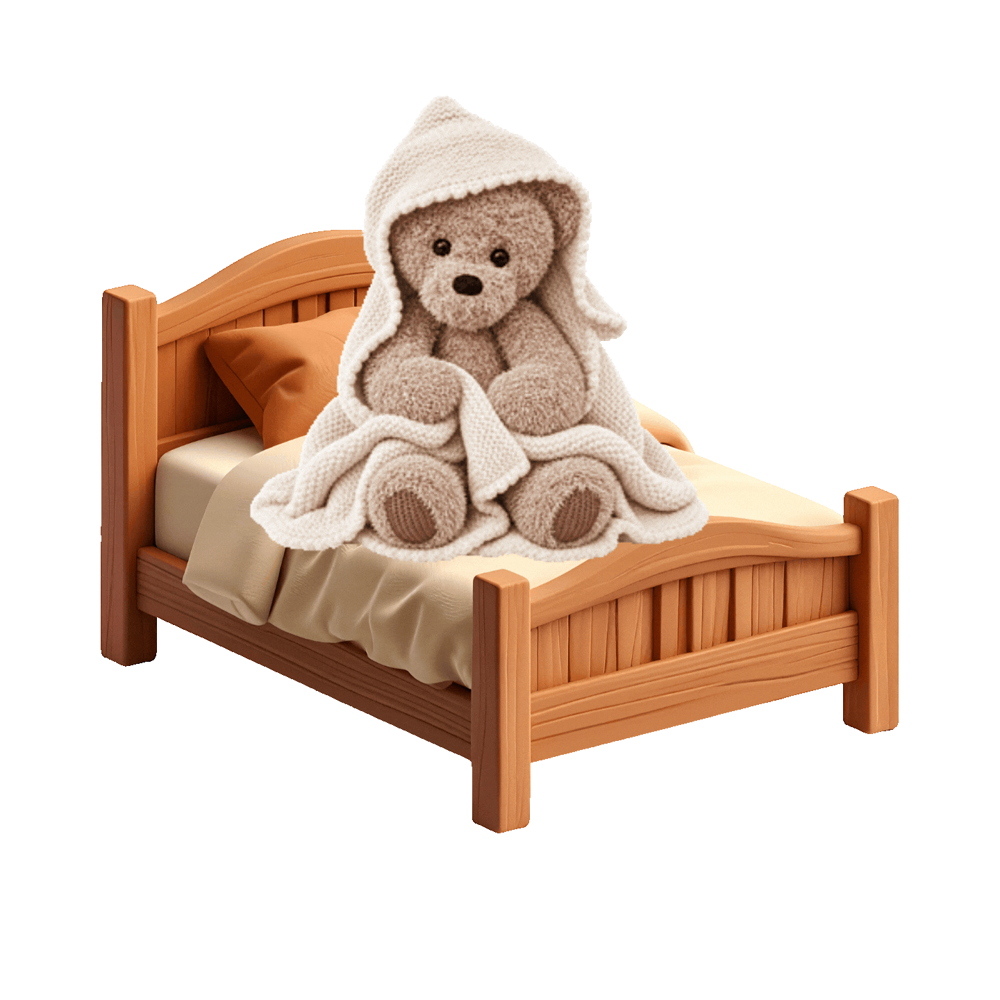

Over Teddy
Teddy bestaat uit een lijf, hoofd, snuit, twee oren, twee armen en twee benen. Je haakt de onderdelen apart en naait ze daarna aan elkaar. Het dekentje en de kap worden afzonderlijk gebreid en vervolgens aan elkaar gehaakt.
 Terug naar de homepagina
Terug naar de homepagina

Teddy is een pluizige beer met lange armen, grote voeten en een zacht snoetje. Het harige Couture-garen geeft hem een warme, eigenwijze uitstraling. Zijn neusje wordt geborduurd en zijn handjes en voetzolen hebben een gladder oppervlak.
De beer wordt ongeveer 37 cm groot. Het bijpassende babydekentje met kap wordt gebreid in ribbelsteek en krijgt een gehaakte picotrand.
Teddy bestaat uit een lijf, hoofd, snuit, twee oren, twee armen en twee benen. Je haakt de onderdelen apart en naait ze daarna aan elkaar. Het dekentje en de kap worden afzonderlijk gebreid en vervolgens aan elkaar gehaakt.
Lees eerst beide patronen door. Bij pluizig garen zijn de steken minder zichtbaar; tel regelmatig en gebruik een steekmarkeerder. Laat na elk onderdeel voldoende draad over voor het vastnaaien.
Wil je Bert aan een baby, jong kind of je hond geven? Gebruik dan geen veiligheidsogen. Je kunt de ogen in dat geval met zwart garen borduren. Controleer ook of alle onderdelen stevig vastzitten en werk alle losse draden goed weg.